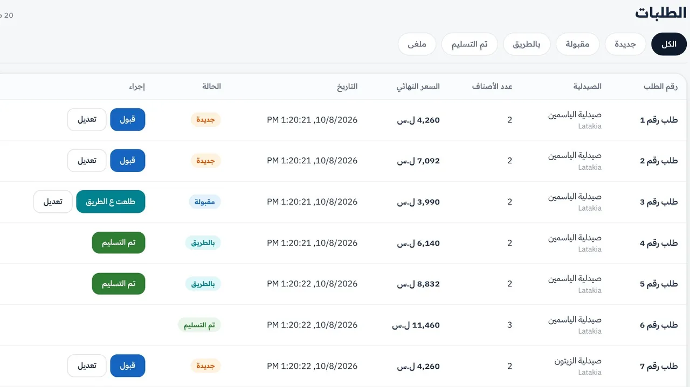
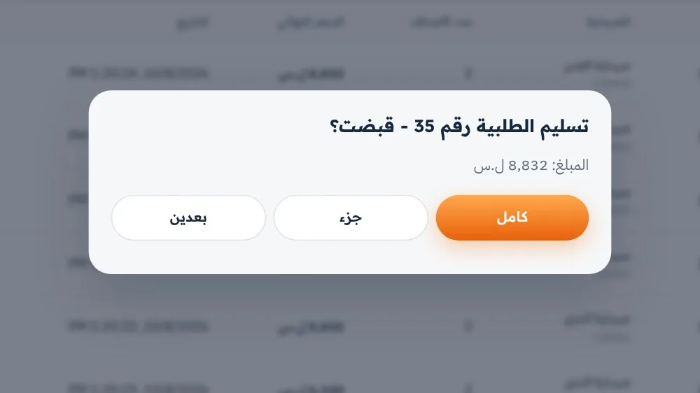
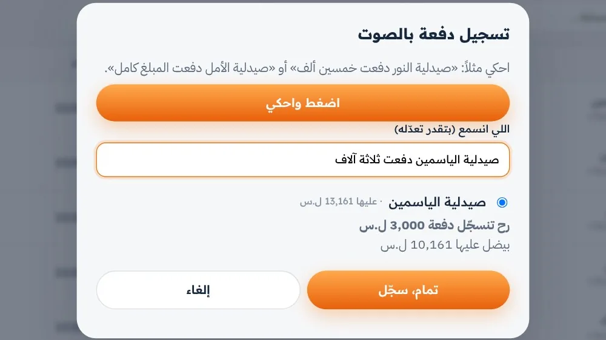
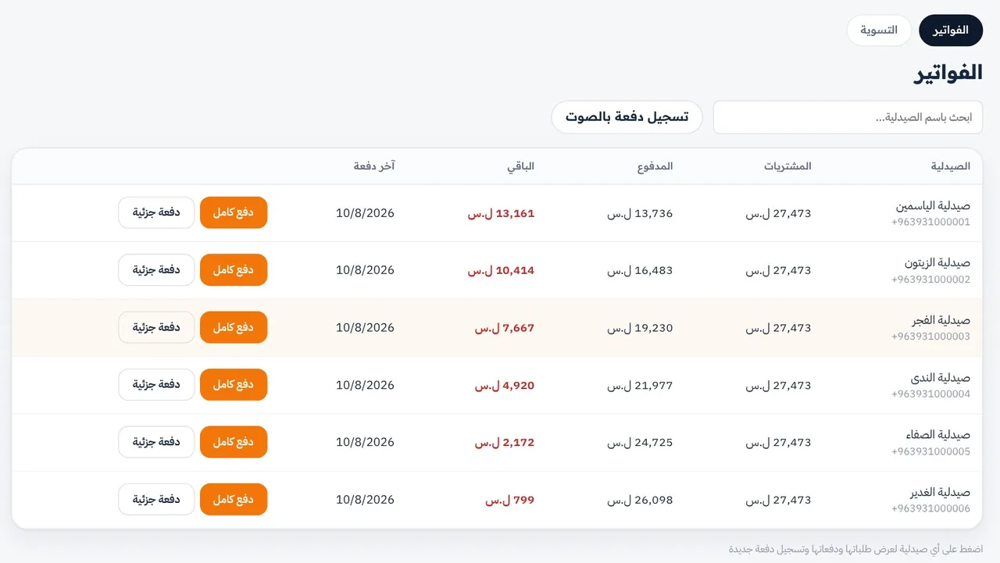

للصيدلية · تطبيق Android
اطلب وتابع من موبايلك.
- الأصناف قدامك. أسعار وتوفر وعروض وبونص، مع بدائل للأصناف.
- طلبية واضحة. اختار الكميات وتابع الحالة والإشعارات.
- سجلك محفوظ. طلبيات سابقة وإعادة طلب ومرتجعات ورصيدك عند كل مستودع.
فينيق · للصيدليات ومستودعات الأدوية
الصيدلية تبحث وتطلب وتتابع. والمستودع يجمع طلبياته وحساباته بمكان واحد، إلى جانب طريقة شغله الحالية.
مرحلة الإطلاق: اللاذقية

شاهد كيف تصل الطلبية من الصيدلية إلى مستودعك، وكيف تتابع حسابك.
من البحث عن الصنف لحد متابعة الطلبية والحساب.
للصيدلية · تطبيق Android
للمستودع · لوحة تحكم على الويب
الدفع عند التسليم. التطبيق ما بيطلب بطاقات أو دفع إلكتروني.
كل أصناف المستودع، بدرج واحد بجيبتك.
ابحث عن دواء أو افتح درج، أضف صنف، وبعدين جرّب إرسال الطلبية وشوف مراحلها.
هاي محاكاة للتعريف بفينيق. ما فيها أسعار، وما بينبعت منها أي طلب حقيقي.
تجربة فقط: أسماء الأصناف من سجل وزارة الصحة السورية، ولا شيء يُرسل فعلاً.
عم نبدأ من اللاذقية
فينيق بمرحلة الإطلاق. فريقنا بيسجّل المستودعات، بيساعد بإعداد الأصناف، وبيعرّف الصيدليات على المنصة. منعرض عليكم التطبيق واللوحة بشكل مباشر، ومنطوّر التجربة من ملاحظاتكم.
لقطات من لوحة التحكم ببيانات تجريبية: «مستودع تجريبي» والصيدليات والأسعار توضيحية.



فريق فينيق بيسجّل مستودعك وبيرتّب البداية معك:
فريقنا بينشئ الحساب وبيعطيكم الدخول للوحة التحكم.
منساعدكم بأول رفع للأصناف من ملف Excel، ومنعرّف الصيدليات بمستودعكم.
تبدأ الطلبيات بالوصول إلى لوحة التحكم، وتجهزونها بالطريقة التي نتفق عليها.
دعم فني مستمر، ونحسّن التجربة بناءً على ملاحظاتكم.
للموبايلات التي تعمل بنظام Android. التنزيل مباشر من هنا، بلا حاجة لمتجر Google Play.
نزّل التطبيقنسخة iPhone ليست جاهزة بعد.
تواصل مع فريق فينيق لحجز زيارة. فريقنا بينشئ حساب المستودع وبيساعدك بإعداد الأصناف والدخول للوحة.
الصيدليات المسجّلة والمفعّلة داخل التطبيق. الأسعار مو منشورة للعامة على هالموقع؛ والتجربة هون بدون أسعار.
البيانات مو متاحة للعامة. الوصول حسب صلاحيات الحساب: أطراف التعامل والمستخدمون المخوّلون، ومشرفو المنصة لأغراض التشغيل والدعم. التفاصيل في سياسة الخصوصية وداخل التطبيق.
لا. المندوب بيكمل علاقته مع الصيدليات، ومعه أدوات لمتابعة صيدلياته وزياراته وطلبياته وعمولته.
التطبيق مجاني للصيدليات. اشتراك المستودع مجاني حتى نهاية 2026. تفاصيل الاشتراك والعمولة موجودة بعرض المستودعات، وفريقنا بيشرحها معك قبل البدء.
تطبيق الصيدلية والمندوب بيشتغل على Android. لوحة المستودع بتفتح من متصفح اللابتوب. نسخة iPhone مو متوفرة حالياً.
المستودع بيقدر يخفي الصنف من الكتالوج، والتطبيق بيعرض بدائل حسب المادة الفعالة والعيار. وللمتابعة في تواصل مع المستودع وطلبات إرجاع، وشكاوى بتوصل للإدارة.
نشرح فينيق عملياً في زيارة قصيرة ونتفق معكم على طريقة التعاون المناسبة. نعمل حالياً في اللاذقية.